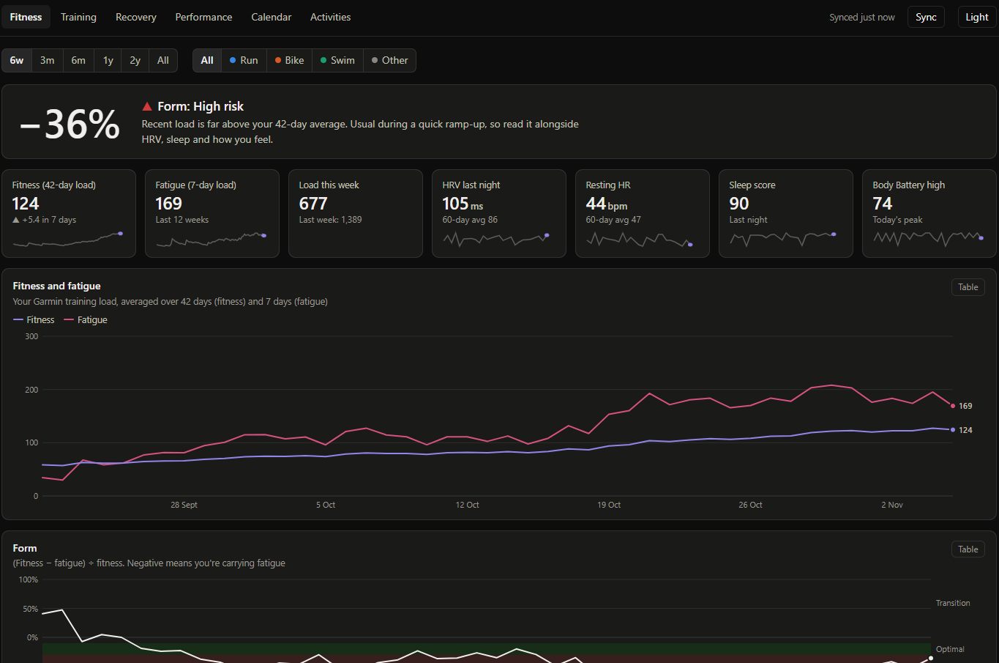
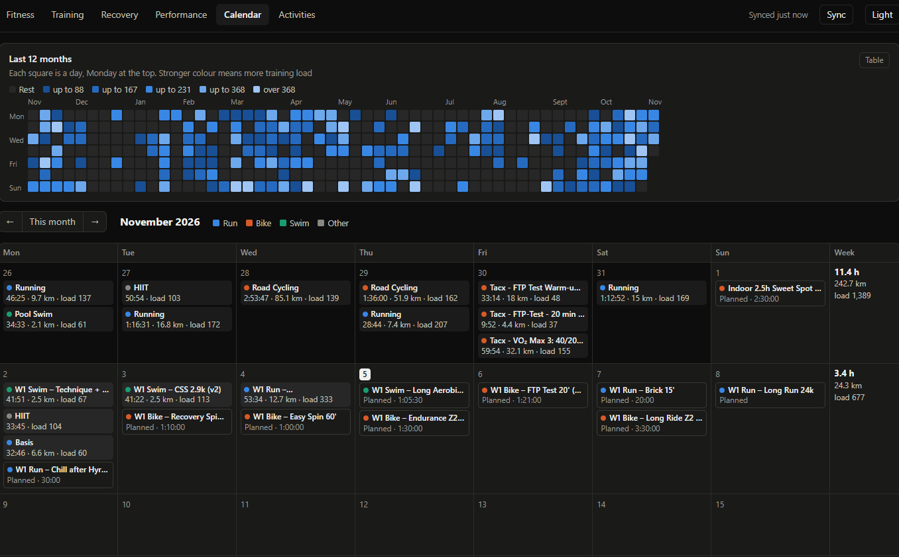

Garmin MCP Server & Training Dashboard
A local MCP server that lets Claude read my Garmin Connect data and put structured workouts on my calendar, plus a training dashboard that runs in the browser.
What it does
The project has two parts that share the same Garmin login. The MCP server connects Garmin Connect to the Claude desktop app, so Claude can coach from real training and recovery data. The dashboard shows the same data as charts and doesn't need Claude running.
MCP Server
The server gives Claude tools for reading sleep, HRV, training readiness, activities with their laps and heart rate zones, training status, VO2max and race predictions.
Claude can also create structured run, bike and swim workouts. With a date, a workout goes on the Garmin Connect calendar and syncs to the watch, ready to start. Bike targets are stored as a percentage of FTP rather than fixed watts, so the watch recalculates them when FTP changes.
Training Dashboard
The dashboard covers fitness and fatigue, training volume, recovery, performance, a calendar and a searchable activity list. Date range and sport filters apply across the charts. Fitness and fatigue are 42-day and 7-day exponential averages of Garmin's training load.


Local by Design
Both parts run on my own PC. The Garmin password is used once to log in and is never stored. The dashboard listens on the local machine only, makes no requests except to Garmin, and never changes anything on the Garmin account. Its data is cached in a SQLite file, so the page loads instantly and only new data is fetched. Anything Claude reads through the MCP server also goes to Anthropic.
This is an unofficial personal project, not affiliated with or endorsed by Garmin.
Project Materials
The repository is public and includes setup instructions for running both the MCP server and training dashboard locally.